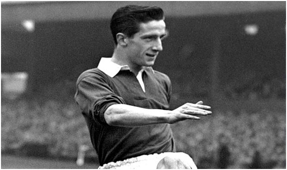
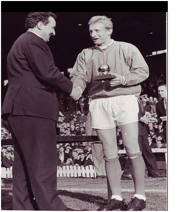

Chương 14

è 1958, UEFA thực hiện một cử chỉ không tiền khoáng hậu: Mời Manchester United dự Cúp C1, bất chấp việc họ không phải nhà vô địch nước Anh, cũng không phải đương kim vô địch châu Âu. CLB gửi đơn xin phép lên FA và FL. Y như hồi 1956, FA bật đèn xanh, trong khi FL trương cờ đỏ. Ngỡ rằng được FA đồng ý là đủ, United nhận lời dự giải, bốc thăm trúng Young Boys của Thụy Sỹ tại vòng một.
Chẳng may, lần này FL quyết qua mặt FA, một mực cấm không cho United thi đấu. United đương nhiên không phục, bèn kháng cáo lên Ủy Ban Giải Quyết Khiếu Nại. Ủy Ban ra phán quyết nêu rõ: “FL không có quyền gì cấm đoán CLB bóng đá Manchester United tham gia Cúp C1 mùa 1958-1959”. Các vị lãnh đạo FL lồng lộn lên, bác bỏ phán quyết, kêu gọi thành lập một liên ủy ban giữa FA và FL để đưa ra quyết định cuối cùng.
BLĐ United vô cùng tự tin, bởi FA và Ban Khiếu Nại đều đã đứng về phía mình, nay không lý do gì Liên Ủy Ban quyết định ngược lại. Vậy mà ngày 30 tháng 8, Liên Ủy Ban họp xong, thông báo cho CLB như sau: “Chúng tôi cùng cho rằng Cúp C1 là giải đấu của các nhà VĐQG. Manchester United do đó không đủ tiêu chuẩn tham dự.”
Do đâu lại có sự quay ngược 180 độ như trên? Có tin rằng cả bộ sậu lãnh đạo FL hùa nhau gây sức ép lên FA, dọa sẽ từ chức tập thể nếu FA cho phép United tiếp tục tranh tài trên đấu trường châu Âu. Trước sức ép lớn bất ngờ, FA đành chịu nhún, nuốt lời đã hứa với Man đỏ.
Lúc này Matt Busby đã trở lại cương vị HLV trưởng United. Thất vọng trước quyết định của Liên Ủy Ban, song ông chẳng có cách nào hơn, đành tập trung vào giải Hạng Nhất. Trái với nhiều dự đoán, Busby không tích cực “shopping” để tái thiết đội hình, mà tiếp tục tin dùng lực lượng hiện có. Charlton, Viollet, McGuinness[1], Scanlon…đều đã bình phục chấn thương; sau màn thử lửa mùa trước, các cầu thủ trẻ như Shay Brennan và Mark Pearson đang lớn dần, vậy đâu cần mua thêm nhiều cầu thủ. Busby chỉ sắm một tân binh duy nhất: Albert Quixall từ Sheffield Wednesday, với giá chuyển nhượng kỷ lục nước Anh: 45000 bảng. Busby là vậy: Rất ít mua sắm, chủ yếu sử dụng cầu thủ trẻ tự đào tạo, cây nhà lá vườn, nhưng một khi đã mua thì rất chịu chi.
Đáng tiếc, Quixall là thương vụ thất bại. Tuy có năng lực, tiền đạo này yếu về tâm lý. Lúc mới đến Old Trafford, anh chưa kịp thích ứng, lại gánh áp lực từ cái giá quá cao, nên thi đấu không thành công. Càng không thành công, anh càng mất tinh thần, không sao lấy lại được phong độ như thời ở Wednesday. Nhận xét về Quixall, có người mỉa mai: “Anh ta có thể làm bất kỳ điều gì với trái bóng, miễn là không có đối thủ theo kèm!”
Mùa 1958-1959, trong khi Quixall ghi được đúng…bốn bàn thắng, Bobby Charlton dẫn đầu danh sách phá lưới tại Old Trafford, với 29 lần lập công. Không còn những Duncan Edwards, Roger Byrne…, ở tuổi 22, Charlton vươn lên thành ngôi sao sáng nhất của United. Phong độ bùng nổ từ Charlton giúp CLB giành ngôi á quân nước Anh, chỉ đứng sau Wolverhampton: Một thành tích không ai dám mơ đến sau thảm họa Munich.Không chỉ mắn ghi bàn, Charlton còn giỏi kiến tạo. Nhờ anh tiếp đạn, Dennis Viollet ghi được 32 bàn trong mùa 1959-1960, đi vào lịch sử với tư cách cầu thủ United đầu tiên đoạt ngôi Vua Phá Lưới giải Hạng Nhất. Sau Viollet, biết bao chân sút cự phách từng cập bến Old Trafford, như Denis Law, Van Nistelrooy, Cristiano Ronaldo, vậy mà chưa ai qua nổi cột mốc 32 bàn trên.

Dennis Viollet (Ảnh: Thetimes.co.uk)
Tuy nhiên, trở lại đỉnh cao không phải việc dễ dàng. Giành chức á quân xong, United không những không tiến lên, mà còn đi lùi đều. Mùa 1961-1962, CLB rơi xuống tận vị trí 15. Đây đó bắt đầu xuất hiện những ý kiến nghi ngờ Matt Busby, cho rằng ông đã hết thời. Những ý kiến trên cũng có cơ sở, bởi Busby hậu Munich quả thật đã đổi khác rất nhiều. Thoát khỏi lưỡi hái tử thần, nhưng ông mang di chứng ở chân và lưng, thường xuyên lên cơn đau. Thêm vào đó là vết thương tinh thần luôn luôn dằn vặt. Mới ngoài 50 mà trông Busby già xọm, ai cũng gọi là ông lão. Ông không còn đủ sức trực tiếp ra sân huấn luyện như xưa, phải giao lại trách nhiệm cho bộ ba Murphy, Crompton và McGuinness. Tháng 2, 1961, ông vào viện phẫu thuật lưng, sau đó đi nghỉ dưỡng đến tận mùa hè. Giới thạo tin kháo nhau Busby sẽ sớm nhường chức HLV cho cựu danh thủ Johnny Carey, lui về hậu trường tham gia BLĐ CLB.
Thời gian này, giữa Busby và một số học trò nảy sinh mâu thuẫn. Năm 1961, nhờ nỗ lực đấu tranh của cầu thủ, mức lương trần 20 bảng/tuần được dỡ bỏ. Trong khi các CLB khác sẵn sàng tăng lương lên chót vót, Busby chỉ trả thêm cho cầu thủ ngôi sao…5 bảng mỗi tuần, cầu thủ bình thường thì vẫn cứ 20 bảng. Chẳng bao lâu, United mang danh đội bóng hà tiện nhất nước Anh. Cho rằng vua phá lưới và kỷ lục gia như mình xứng đáng với mức lương cao hơn, Dennis Viollet quyết tâm đấu tranh tới cùng với HLV. Kết quả: Anh bị Busby đẩy sang Stoke City. Một cầu thủ xuất sắc khác, Johnny Giles, thì không than phiền chuyện tiền lương, song suốt ngày kỳ kèo đòi Busby cho mình đá tiền đạo thay vì tiền vệ. Chịu không thấu, Busby bán luôn Giles cho Leeds United.
Để bổ sung lực lượng, Busby cất nhắc tiền vệ “măng non” Nobby Stiles từ đội trẻ lên đội một, đồng thời mua về Maurice Setters từ West Brom, Noel Cantwell từ West Ham và David Herd từ Arsenal, cả ba thương vụ đều thành công. Tuy nhiên, thành công rực rỡ nhất phải kể đến vụ mua siêu tiền đạo người Scotland Denis Law.
Năm 1958, trên cương vị HLV Scotland, Matt Busby đã cho Denis Law cơ hội lần đầu tiên khoác áo ĐTQG. Xa hơn nữa, từ 1956, Busby sẵn sàng trả 10000 bảng để mua Law từ đội trẻ Huddersfield. 10000 là cái giá cực cao cho một cầu thủ mới 16 tuổi, song Huddersfield hiểu rõ mình đang sở hữu trân châu bảo ngọc, nên cương quyết từ chối. Thay vì đến Old Trafford, Law chuyển đến Manchester City, rồi sang Ý chơi cho Torino. Không thích ứng với lối chơi ở Serie A, trong lần gặp Matt Busby ở Hampden Park vào tháng 4, 1962, Law thổ lộ ý muốn trở lại Anh. Busby cho biết nếu Torino chịu bán, Manchester United sẽ mua ngay.
Về đến Ý, Law lập tức làm đơn xin chuyển nhượng. Torino ra giá 100000 bảng, United chấp thuận liền. Dường như thấy mình hớ, chủ tịch Torino, Angelo Fillipone, gửi điện tín đến Old Trafford, thông báo đổi ý, tăng giá lên 150000! Busby phát cáu: 100000 đã là giá kỷ lục nước Anh rồi! Làm ăn gì mà như con nít, nói đi nói lại là sao? Ông gửi điện trả lời: Chỉ đồng ý trả theo giá cũ, không hơn một xu. Hai bên đang găng nhau thì Juventus nhảy vào cuộc, và Torino đồng ý bán Law cho “lão phu nhân” với giá 160000.
Lần này, đến lượt Law nổi điên, thu xếp hành lý, bay về Scotland. “Tôi cần một cuối tuần thanh thản, tránh xa hết những cái thị phi này”, anh trả lời báo giới, “Tôi chỉ ký hợp đồng với Manchester United, không ký với Juventus. Nếu tôi không đồng ý, Torino đừng hòng bán được tôi”. Biết Law nổi tiếng ngang ngạnh, cứng đầu, Torino sợ mất cả chì lẫn chài, vội trở lại bàn đàm phán với United. Hai bên đồng ý mức giá cuối cùng là 115000 bảng[2].
Đắt xắt ra miếng, vừa đến Old Trafford, Denis Law chứng tỏ ngay giá trị. Mùa 1962-1963, anh cùng David Herd hợp thành cặp tiền đạo sát thủ: Law ghi 29 bàn, Herd 21. Trong trận chung kết Cúp FA, chính Law mở tỷ số, trước khi Herd ghi thêm hai bàn, giúp United thắng Leicester 3-1, giành danh hiệu lớn đầu tiên kể từ Munich. Mùa 1963-1964, bất chấp việc bị treo giò gần một tháng vì tội gây sự, một mình Law ghi…46 bàn, trong đó có bảy cú đúp, sáu hattrick và một poker (4 bàn)[3]! Các bàn thắng được ghi bằng đủ kiểu: Từ sút xa, sút gần, đánh đầu, sút phạt, cho tới volley cắt kéo. Với thành tích tuyệt vời này, Law được tôn vinh bằng danh hiệu Quả Bóng Vàng Châu Âu 1964. Năm đó, United về nhì giải Hạng Nhất, và vào tứ kết Cúp C2 Châu Âu. Ở vòng tứ kết, đội đánh bại Sporting Lisbon 4-1 trên sân nhà, nhờ công Law (3 bàn) và Charlton, song sớm chủ quan, để thua trận lượt về 0-5, đành bị loại tức tưởi.
Từ 1964, Matt Busby tín nhiệm trao Law băng thủ quân. Người hâm mộ thì trìu mến đặt cho anh biệt danh “ông vua của khán đài Stretford”[4]. Trong suốt chiều dài lịch sử Old Trafford, Denis Law và Eric Cantona là hai cầu thủ duy nhất được “tôn vương”. Hai nhà vua này giống nhau một cách kỳ lạ, về tài năng lẫn tính tình. Đặc điểm của Cantona là chiếc cổ áo dựng ngược, còn Law thể hiện cá tính bằng cách luôn để áo ngoài quần. Cả hai đều nóng nảy, cao ngạo, coi trời bằng vung, thường xuyên nhận thẻ, lãnh án treo giò. Có lẽ vì United mang biệt danh Quỷ Đỏ, phải là cầu thủ hơi “quỷ” như Law và Cantona mới được làm vua, chứ hiền hòa như Ryan Giggs hay Bobby Charlton thì chẳng ai cho lên ngai vàng, mặc dù vẫn rất được mến mộ.
Trong lúc Law làm mưa làm gió tại giải Hạng Nhất, đội trẻ United cũng đang làm khán giả ngất ngây. Năm 1964, sau sáu năm không danh hiệu, United lại giành Cúp FA trẻ, trình làng một loạt tài năng mới như David Sadler, John Aston, và đặc biệt là George Best. Lúc đến Old Trafford, Best là cậu bé 15 tuổi bé nhỏ, mảnh khảnh, tưởng gió thổi là bay. Để tăng chiều cao, anh treo quả bóng tennis lên cửa, mỗi ngày mỗi nỗ lực nhảy; cứ mỗi lần chạm đầu vào bóng thì lại treo bóng lên cao hơn. Để tăng thể lực, rèn kỹ năng, anh miệt mài tập đêm tập ngày. Chẳng bao lâu, Best đã vượt trội các bạn đồng lứa, nên được cho lên tập cùng đội lớn. Trên đội lớn, cậu bé người Bắc Ireland chẳng những không bỡ ngỡ, mà còn tự tin dùng kỹ thuật cá nhân quay các đàn anh như quay dế!
Với Law và Charlton trên đội một, Best nơi đội trẻ, United thẳng tiến trên đường tìm lại vinh quang. Chẳng ai còn dám bảo Matt Busby hết thời. Không những không hết thời, thế lực Busby tại Old Trafford vững vàng hơn bao giờ hết. Được CLB chia cố phiếu, ông trở thành cổ đông lớn thứ ba của United, nắm trong tay 1/9 tổng số cố phần đội bóng. Vừa làm HLV, vừa là chủ lớn, nay dù CLB có xuống hạng, cũng không ai sa thải nổi Busby. Năm 1965, khi Louis Edwards lên ghế chủ tịch thay Harold Hardman, United gần như hoàn toàn nằm trong tay Busby, bởi Edwards là “đồng chí” thân thiết của ông, ông nói gì Edwards nghe nấy. Trước và sau Busby, không một HLV United nào sở hữu nhiều quyền lực như ông. Ngay đến Alex Ferguson cũng còn kém xa.

Denis Law nhận danh hiệu Quả Bóng Vàng Châu Âu 1964 (Ảnh:Maltafootballcollection.com)
Chú thích:
[1] Năm 1959, Wilf McGuinness lại bị chấn thương nặng, phải từ giã sự nghiệp, chuyển sang làm trợ huấn.
[2] Trong hợp đồng chuyển nhượng Denis Law từ Manchester City sang Torino có điều khoản: Nếu sau này Torino bán Law, đội không được quyền bán cho bất kỳ CLB Anh nào ngoại trừ City. May là Matt Busby có quan hệ rất hữu hảo với City, nên khi Law về Old Trafford, Man xanh không đem điều khoản trên ra làm khó dễ.
[3] Với 46 bàn, Law lập kỷ lục cầu thủ United ghi nhiều bàn nhất trong một mùa giải trên tất cả các mặt trận. Tuy thế, nếu tính riêng giải VĐQG, Law chỉ ghi được 30 bàn, còn kém hai so với Dennis Viollet mùa 1959-1960.
[4] Khu vực khán đài phía Tây ở Old Trafford. Các CĐV cuồng nhiệt nhất của United đều ngồi nơi đây.